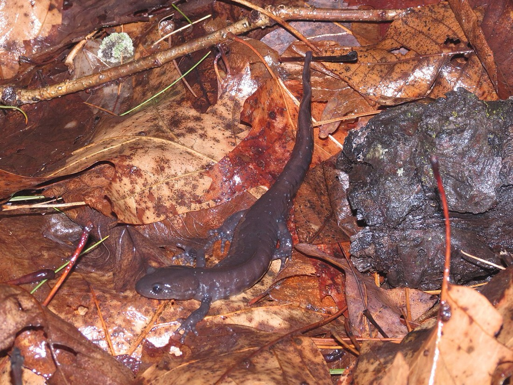

Jefferson Salamander
Ambystoma jeffersonianum
- Kind
- amphibian
- Native to Vermont
- yes
- Legal status
- Designated a species of special concern in Vermont and a Species of Greatest Conservation Need (medium priority) in the Wildlife Action Plan; state Natural Heritage rank S3 (uncommon, localized). The page cites no statute or regulation. (checked 2026-10-31)
- Look-alikes
- Blue-spotted salamander (head shorter and narrower than the Jefferson's; the two hybridize, so some are hard to identify); Spotted salamander (head wider than the Jefferson's)
Pictures

Names
Jefferson Salamander, Ambystoma jeffersonianum.
Range and habitat
Upland forests near semi-permanent pools in low hilly regions, scattered across the state; the breeding pools must be buffered against acidity, so the species occurs where soils and bedrock offset acid rain. Mostly underground except when migrating to breeding pools (Atlas).
How to identify (by season; look-alikes and the key difference)
- Size: the average large adult is 6.6 inches (Atlas).
- Color and shape: solid gray-brown with tiny white flecks on the belly and lower sides; chunky, with strong legs, a wide head and a laterally compressed (fish-like) tail.
- Eggs: sausage-shaped masses of 10 to 30 eggs that, unlike spotted salamander masses, do not hold their shape out of water.
- Look-alikes (Atlas): the blue-spotted salamander has a shorter, narrower head, and the spotted salamander a wider one; hybrids make some individuals hard to identify.
Through the year
No calendar entries: The Atlas page gives no breeding months for this species (a photo file name mentions an egg mass on 9 April 2017, which is a single record, not a window).
Role and management
The only threat the page names is acidity of the breeding pools (acid rain). It gives no advice on vernal pools, forestry or land management and asks only for sighting reports. The state's vernal pool fact-sheet recommendations, and the pool-specialist amphibians, are recorded in Wood Frog and R-VT-004 Vernal Pool ESTA.
What helps it thrive (light, soil, shelter, food and the trees it uses)
- Water, shade and cover (the Guide, chapter 30). Most reptiles and amphibians need water for some stage of their life: conserve streams, ponds, wetlands and vernal pools. Frogs, toads and most salamanders lay eggs in water; many breed in temporary vernal pools free of fish, where the young change from egg to larva to adult in one summer if the pool stays wet (dry years give few eggs or hatchlings). Keep intact forest buffers along water, rock walls, brush piles, downed trees and hollow stumps; leave intact leaf litter and rotten logs; leave coarse woody debris when working in the woods ('woods that look like city parks are not good habitat'); keep streams shaded and free of sediment with a naturally vegetated buffer for night-time feeding; abundant shade keeps the woods cool and moist.
- This species: named in the Guide among Vermont's ten salamander species, which says salamanders in general breed in shallow wetlands and vernal pools and shelter in leaf mold and decaying logs. For vernal pool buffers see Wood Frog.
Legal status
Designated a species of special concern in Vermont and an SGCN (a planning category) on the page read; no statute or regulation is cited. Confirm with the county forester and the Wetlands program before working near a pool (Wood Frog).
Sources
- Vermont Reptile and Amphibian Atlas, Jefferson Salamander species summary (Ariel K. McK. Burgess): https://www.vtherpatlas.org/herp-species-in-vermont/ambystoma-jeffersonianum/ (read through a summarizing fetch 2026-10-31)
- Vermont Fish & Wildlife Department, A Landowner's Guide, Wildlife Habitat Management for Lands in Vermont, chapter 30 (Reptiles and Amphibians): https://vtfishandwildlife.com/sites/fishandwildlife/files/documents/Learn%20More/LandownersGuide/Landowner-Guide-Complete.pdf (read as text 2026-11-01)
What this page is based on
Kind of source: primary-agency and Vermont atlas (Vermont Fish & Wildlife; the Vermont Reptile and Amphibian Atlas)
What was read: The vermont reptile and amphibian atlas species summary, read through summarizing fetches on 2026-10-31; neither shows a last-updated date. Months in the calendar are the Atlas's or the state page's own words where basis is stated, and a translation of a season where basis is approximate. Pictures: the Wikimedia Commons description and the photo itself were looked at. Habitat needs added 2026-11-01 from chapter 30 of the Vermont Fish and Wildlife Landowner's Guide (read as text).
Last checked: 2026-10-31
Vermont land and forest reference, built 2026-11-01. Rules and dates here are summaries, not legal advice; dates shift with elevation and year. Photo and recording credits · Note: _reference/US-VT/Species/Jefferson Salamander.md